Installing Git on Windows
Here are the steps to install Git on Windows
-
Download the installer
Go to Git web page and click the big button on the right that says "Download for Windows"
-
Run the installer
Double-click the downloaded installer and follow the wizard that has information on what is relevant.
-
Allow changes
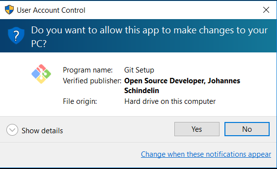 -
Accept GPL license (just for Git, not for what you are about to implement), by clicking "Next >"
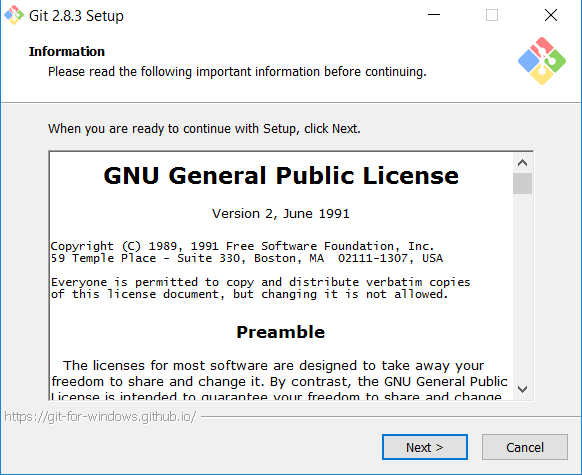 -
Select installation location
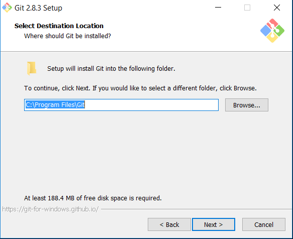 -
Select options
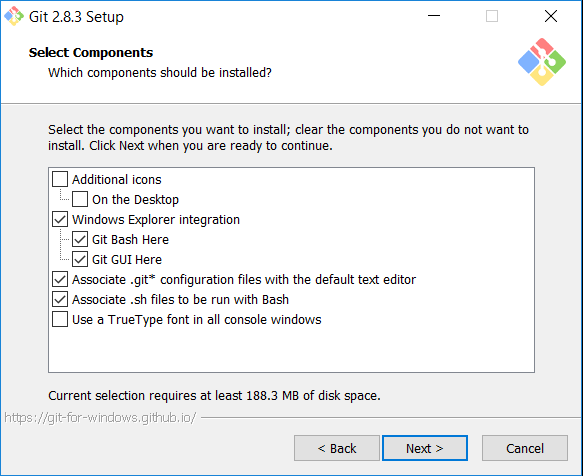I, personally, don't like to add things to Windows Explorer because, little by little all these little integrations make everything else heavier
-
Select Start Menu location
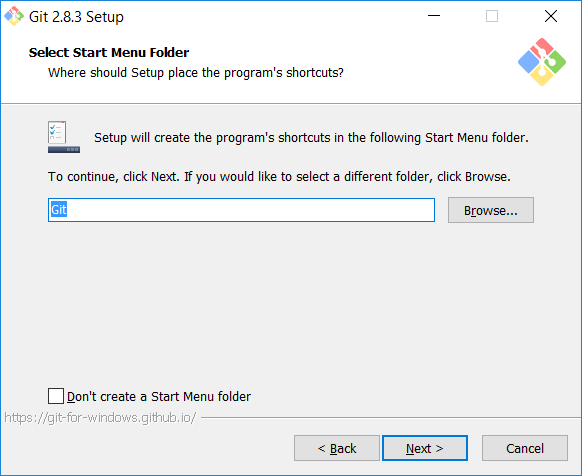 -
Select Command Line option
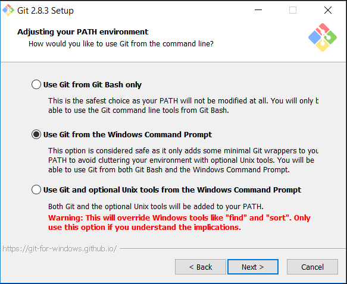 -
Select line endings checkout and commit
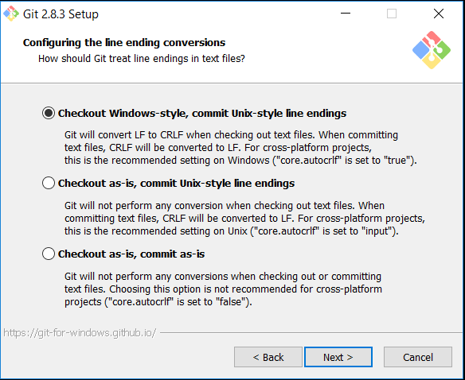Since the repository and the other platforms are Linux based, it makes sense that the commit converts the line-endings to Unix-style in commit. Since this is a Windows machine, it makes sense that the checkout converts them to Windows-style. I usually choose the first option.
-
Select Git Bash Terminal
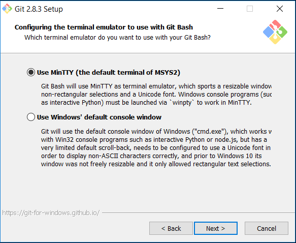 -
Configure extra options and click "Install"
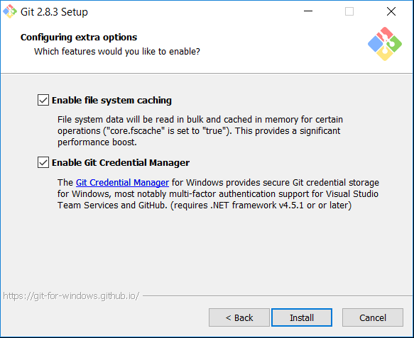"system cashing" is an optimization that in a modern operating system shouldn't have performance implications on all the rest and is, for sure a performance improvement for Git.
Although there are GUIs (Graphicall User Interfaces) for Git (e.g., GitKraken), I prefer to manage Git from the command line and providing authentication is an indicator that something important is about to be done and a last change to stop it. I, usually, disable Credential Manager.
-
And we're done!
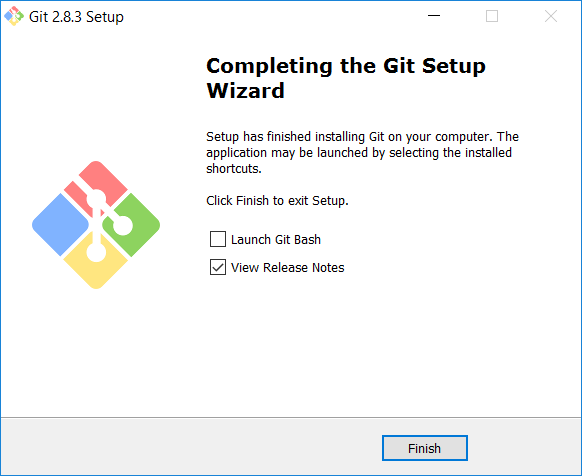
The installation takes place...
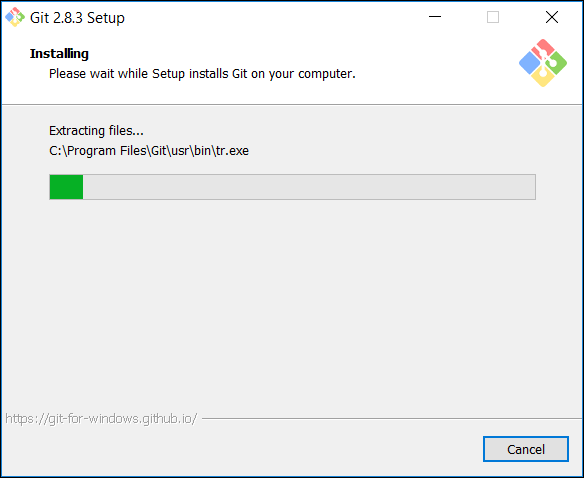 -
-
Confirm installation
In the Command Prompt type
> gitAs no parameter were provided, the usage help should output, like so:
usage: git [--version] [--help] [-C
] [-c name=value] [--exec-path[= ]] [--html-path] [--man-path] [--info-path] [-p | --paginate | --no-pager] [--no-replace-objects] [--bare] [--git-dir= ] [--work-tree= ] [--namespace= ] [ ] These are common Git commands used in various situations: start a working area (see also: git help tutorial) clone Clone a repository into a new directory init Create an empty Git repository or reinitialize an existing one work on the current change (see also: git help everyday) add Add file contents to the index mv Move or rename a file, a directory, or a symlink reset Reset current HEAD to the specified state rm Remove files from the working tree and from the index examine the history and state (see also: git help revisions) bisect Use binary search to find the commit that introduced a bug grep Print lines matching a pattern log Show commit logs show Show various types of objects status Show the working tree status grow, mark and tweak your common history branch List, create, or delete branches checkout Switch branches or restore working tree files commit Record changes to the repository diff Show changes between commits, commit and working tree, etc merge Join two or more development histories together rebase Reapply commits on top of another base tip tag Create, list, delete or verify a tag object signed with GPG collaborate (see also: git help workflows) fetch Download objects and refs from another repository pull Fetch from and integrate with another repository or a local branch push Update remote refs along with associated objects 'git help -a' and 'git help -g' list available subcommands and some concept guides. See 'git help ' or 'git help ' to read about a specific subcommand or concept.